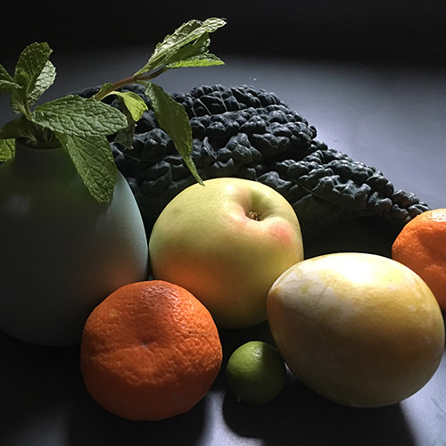

Home| Photoshop| Illustrator| Animate| InDesign| Contact

I'm Kristina Hines! I'm concentrating in Illustration, and took this class as an introduction to many of the digital tools I'll need to use. This site displays all my class projects - they were challenging and interesting, and I can't wait to use these tools more in the future!